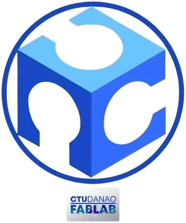

FabLab CTU-Danao
Cebu Technological University – Danao · Region VII
FabLab CTU-Danao is a fabrication laboratory hosted by Cebu Technological University – Danao Campus in Danao City, Cebu. Listed on the global Fab Lab network directory (fablabs.io), FabLab CTU-Danao provides students, faculty, MSMEs, and community members in northern Cebu with access to digital fabrication equipment for prototyping, product development, and innovation projects.
- Category
- Fabrication Laboratory (FabLab)
- Host institution
- Cebu Technological University – Danao
- City
- Danao City, Cebu
- Region
- Region VII
- Operating status
- Operating
About the Center
As part of CTU-Danao's commitment to applied technology education and community extension, the FabLab bridges academic learning with practical digital manufacturing, empowering local entrepreneurs and innovators in the Danao City area to transform ideas into physical products.
Programs & Services
- 3D Printing — Rapid prototyping services for product models, engineering parts, and design projects
- Laser Cutting & Engraving — Precision cutting and engraving for signage, custom products, and component fabrication
- CNC Milling/Router — Computer-controlled machining for wood, acrylic, and soft metals
- Vinyl Cutting — Custom sticker, decal, and signage production
- 3D Scanning — Digital capture of physical objects for reverse engineering and digital archiving
- CAD Workstations — Computer-aided design software access for product and engineering design
- MSME Support — Accessible fabrication services for local micro and small enterprises in Danao City and northern Cebu
- Student & Community Innovation — Open lab access for student projects, research prototypes, and community maker activities
Contact
Sources & references
- ctu.edu.ph/danao/research/usf/fab-lab
- ctu.edu.ph/danao/research/usf/fab-lab/facilities-and-services
- dtiwebfiles.s3.ap-southeast-1.amazonaws.com/BSMED/MED/FabLabsBrochure-15Sep…
Details are drawn from public records and the sources above, July 2026.
Startupreneur Innovation Hub · synced from the Notion catalog (July 2026) · status: published.